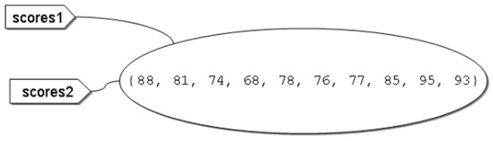
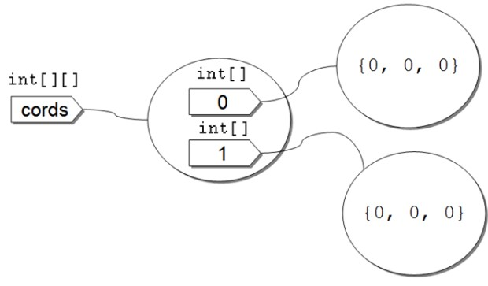
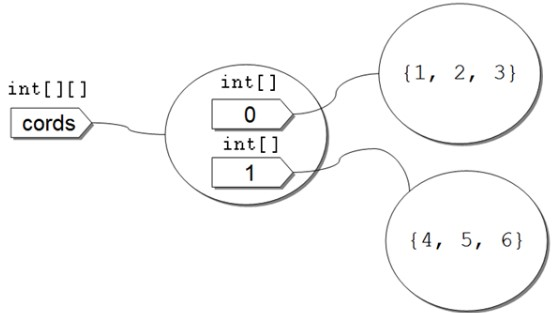
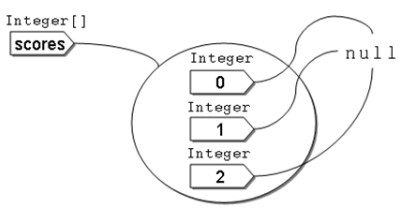
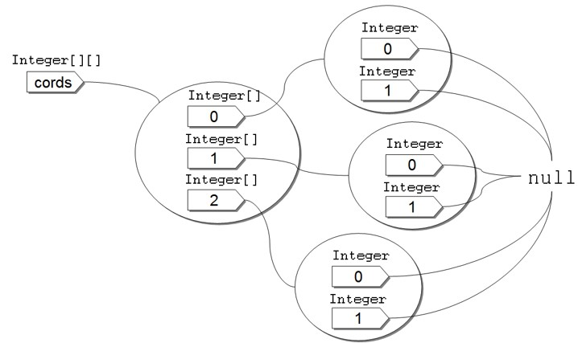

陣列
May 26, 2022若要用程式記錄 Java 小考成績，有 10 名學生，只使用變數的話，必須有 10 個變數儲存學生成績：
int score1 = 88;
int score2 = 81;
int score3 = 74;
...
int score10 = 93;
陣列基礎
實際上不可能這麼作，陣列基本上是用來收集資料，是具有索引（Index）的資料結構，要宣告陣列並初始值可以如下：
int[] scores = {88, 81, 74, 68, 78, 76, 77, 85, 95, 93};
這個程式片段建立了一個陣列，因為使用 int[] 宣告，記憶體會分配長度為 10 的 int 連續空間，各個空間儲存了 88、81、74、68、78、76、77、85、95、93，各個空間都給予索引編號，索引由 0 開始，由於長度是 10，最後一個索引為 9，如果存取超出索引範圍，就會拋出 ArrayIndexOutOfBoundsException 的錯誤。
如果想要循序地取出陣列中每個值，方法之一是使用 for 迴圈：
package cc.openhome;
public class Score {
public static void main(String[] args) {
int[] scores = {88, 81, 74, 68, 78, 76, 77, 85, 95, 93};
for(var i = 0; i < scores.length; i++) {
System.out.printf("學生分數：%d %n", scores[i]);
}
}
}
在宣告的參考名稱旁加上 [] 並指定索引，就可以取得對應值，上例從 i 為 0 到 9，逐一取得值並顯示出來。執行結果如下：
學生分數：81
學生分數：74
學生分數：68
學生分數：78
學生分數：76
學生分數：77
學生分數：85
學生分數：95
學生分數：93
陣列是物件，而不是單純的資料集合，陣列的 length 屬性可以取得陣列長度，也就是陣列的元素個數。
在上面這個範例中，並沒有真正需要索引值，索引只是從頭遞增到尾。如果需求是循序地從頭至尾取出陣列值，可以使用增強式 for 迴圈（Enhanced for loop）語法：
for(int score : scores) {
System.out.printf("學生分數：%d %n", score);
}
這個程式片段會取得 scores 陣列第一個元素，指定給 score 變數後執行迴圈本體，接著取得 scores 中第二個元素，指定給 score 變數後執行迴圈本體，依此類推，直到scores陣列中所有元素都走訪完為止。將這段 for 迴圈片段，取代 Score 類別中的 for 迴圈，執行結果相同。
如果要設定值給陣列中某個元素，也是透過索引。例如：
scores[3] = 86;
System.out.println(scores[3]);
上面這個程式片段將陣列中第 4 個元素，最後會顯示 86 的結果。
一維陣列使用一個索引存取陣列元素，你也可以宣告二維陣列，二維陣列使用兩個索引存取陣列元素。例如宣告陣列來儲存 XY 座標位置要放的值：
package cc.openhome;
public class XY {
public static void main(String[] args) {
int[][] cords = {
{1, 2, 3},
{4, 5, 6}
};
for(var x = 0; x < cords.length; x++) {
for(var y = 0; y < cords[x].length; y++) {
System.out.printf("%2d", cords[x][y]);
}
System.out.println();
}
}
}
要宣告二維陣列，就是在型態關鍵字旁加上 [][]，初學者暫時將二維陣列看作方陣會比較容易理解，由於有兩個維度，必須先透過 cords.length 得知有幾列（Row），對於每一列，再利用 cords[x].length 得知每列有幾個元素，由於在這個範例中，是用二維陣列來記錄 x、y 座標的儲存值，x、y 就相當於列、行（Column）索引，因此可使用 cords[x][y] 來取得 x、y 座標的儲存值。執行結果如下：
1 2 3
4 5 6
其實這個範例也是循序地走訪二維陣列，並沒有真正要用索引作什麼事，可以用增強式for迴圈來改寫會比較簡潔：
for(int[] row : cords) {
for(int value : row) {
System.out.printf("%2d", value);
}
System.out.println();
}
將這個程式片段，取代 XY 類別中的 for 迴圈，執行結果相同，但第一個 for 的 int[] row : cords 是怎麼回事？如果你想知道答案，就得認真瞭解陣列是物件這件事，而不僅僅將它當作連續記憶體空間…
如果要宣告三維陣列，就是在型態關鍵字旁使用 [][][]，四維就是 [][][][]，依此類推，不過不建議以三維陣列以上方式記錄資料，因為不容理撰寫、閱讀與理解，自定類別來解決這類需求會是更好的方式。
陣列物件
如果事先不知道元素值，只知道元素個數，可以使用 new 關鍵字指定長度來建立陣列。例如預先建立長度為 10 的陣列：
int[] scores = new int[10];
只要看到 new，一定就是建立物件，這個語法代表了陣列就是物件。使用 new 建立陣列後，每個索引元素會有預設值：
| 型態 | 初始值 |
|---|---|
byte |
0 |
short |
0 |
int |
0 |
long |
0L |
float |
0.0F |
double |
0.0D |
char |
\u0000（空字元） |
boolean |
false |
| 類別 | null |
如果預設初始值不符合你的需求，你可以使用 java.util.Arrays 的 fill 方法來設定新建陣列的元素值。例如將每個學生的成績預設為 60 分起跳：
package cc.openhome;
import java.util.Arrays;
public class Scores2 {
public static void main(String[] args) {
var scores = new int[10];
for(var score : scores) {
System.out.printf("%2d", score);
}
System.out.println();
Arrays.fill(scores, 60);
for(var score : scores) {
System.out.printf("%3d", score);
}
}
}
執行結果如下：
0 0 0 0 0 0 0 0 0 0
60 60 60 60 60 60 60 60 60 60
如果想在 new 陣列時一併指定初始值，可以如下撰寫，注意不必指定陣列長度：
var scores = new int[] {88, 81, 74, 68, 78, 76, 77, 85, 95, 93};
陣列既然是物件，在本章一開始你也知道，物件是根據類別而建立的實例，代表建立陣列物件的類別定義在哪？答案是由 JVM 動態產生。某種程度上，可以將 int[] 這樣的寫法，看作是類別名稱，這麼看待之後，根據 int[] 而宣告的變數就是參考名稱了，來看看以下這個片段會顯示什麼？
int[] scores1 = {88, 81, 74, 68, 78, 76, 77, 85, 95, 93};
int[] scores2 = scores1;
scores2[0] = 99;
System.out.println(scores1[0]);
因為陣列是物件，而 scores1 與 scores2 是參考名稱，將 scores1 指定給 scores2，意思就是將 scores1 參考的物件也給 scores2 參考，第二行執行後，以圖來表示就是：

scores2[0] = 99 的意思是，將 scores2 參考的陣列物件索引 0 指定為 99，而顯示時使用 scores1[0] 的意思是，取得 scores1 參考的陣列物件索引 0 的值，結果就是 99。
來進一步看二維陣列。如果想用 new 建立二維陣列可以如下：
int[][] cords = new int[2][3];
就一些書籍常用的說法來說，這建立了 2 乘 3 的陣列，每個索引的預設值如上頭表格所示，但是這只是簡化的說法。這個語法實際上建立了一個 int[][] 型態的物件，裏頭有 2 個 int[] 型態的索引，分別參考至長度為 3 的一維陣列物件，初始值都是 0，用圖來表示會更清楚：

如果你將int[][] cords，看成是int[][] cords，int[]就相當於一個型態X，實際上你就是在宣告X的一維陣列，也就是X[]，也就是說，實際上，Java中的多維陣列基本上都是由一維陣列模擬。
如果使用 cords.length 取得長度，這其實是取得 cords 參考的物件有幾個索引？答案是 2 個。如果我問 cords[0].length 呢？這是在問 cords 參考的物件索引0所參考物件（上圖右上的物件）長度為何？答案就是 3。同理，如果我問 cords[1].length 值為何？這是在問 cords 參考的物件索引1所參考物件（上圖右下的物件）長度為何？答案也是 3。看看方才的 XY 類別範例，應該可以知道為何要如下走訪兩維陣列了：
for(var x = 0; x < cords.length; x++) {
for(var y = 0; y < cords[x].length; y++) {
System.out.printf("%2d", cords[x][y]);
}
System.out.println();
}
那麼這段增強式 for 語法是怎麼回事呢？
for(int[] row : cords) {
for(int value : row) {
System.out.printf("%2d", value);
}
System.out.println();
}
根據上圖，你應該就知道實際上 row 參考到的物件就是一維陣列物件。外層 for 迴圈就是循序取得 cords 參考物件的每個索引，將參考到的物件指定給 int[] 型態的 row 名稱。
如果使用 new 配置二維陣列後想要一併指定初值，可以如下撰寫：
int[][] cords = new int[][] {
{1, 2, 3},
{4, 5, 6}
};
試著用圖來表示這段程式碼執行後的結果：

知道以上原理之後，就知道二維陣列不一定得是方陣，也可以建立不規則陣列。例如：
package cc.openhome;
public class IrregularArray {
public static void main(String[] args) {
int[][] arr = new int[2][];
arr[0] = new int[] {1, 2, 3, 4, 5};
arr[1] = new int[] {1, 2, 3};
for(int[] row : arr) {
for(int value : row) {
System.out.printf("%2d", value);
}
System.out.println();
}
}
}
如下建立陣列也是合法的：
int[][] arr = {
{1, 2, 3, 4, 5},
{1, 2, 3}
};
以上都是示範基本型態建立的陣列，接下來介紹類別型態建立的陣列。首先看到如何用 new 關鍵字建立 Integer 陣列：
Integer[] scores = new Integer[3];
看來沒什麼，只不過型態關鍵字從 int、double 等換為類別名稱罷了，那麼請問，上面這個片段建立了幾個 Integer 物件呢？注意！不是 3 個，是 0 個！回頭看一下上面的表格，如果是類別型態，這個片段的寫法建立的陣列，每個索引都是參考至 null，以圖來表示就是：

每個索引其實都是 Integer 型態，可以參考至 Integer 實例。例如：
package cc.openhome;
public class IntegerArray {
public static void main(String[] args) {
Integer[] scores = new Integer[3];
for(Integer score : scores) {
System.out.println(score);
}
scores[0] = 99;
scores[1] = 87;
scores[2] = 66;
for(Integer score : scores) {
System.out.println(score);
}
}
}
執行結果如下所示：
null
null
null
99
87
66
如果事先知道 Integer 陣列每個元素要放什麼，可以如下：
Integer[] scores = {99, 87, 66};
那麼再來問最後一個問題，以下 Integer 二維陣列，建立了幾個 Integer 實例？
Integer[][] cords = new Integer[3][2];
同樣地，若是區域變數，可以使用 var 簡化：
var cords = new Integer[3][2];
應該不會回答 6 個吧！？答案是 0 個 Integer 實例，對初學者來說，建議試著畫圖來表示：

陣列複製
瞭解陣列是物件，就應該知道，以下這個並非陣列複製：
int[] scores1 = {88, 81, 74, 68, 78, 76, 77, 85, 95, 93};
int[] scores2 = scores1;
這個程式片段，只不過是將 scores1 參考的陣列物件，也給 scores2 參考。如果你要作陣列複製，基本作法是另行建立新陣列。例如：
int[] scores1 = {88, 81, 74, 68, 78, 76, 77, 85, 95, 93};
var scores2 = new int[scores1.length];
for(var i = 0; i < scores1.length; i++) {
scores2[i] = scores1[i];
}
在這個程式片段中，建立一個長度與 scores1 相同的新陣列，再逐一走訪 scores1 每個索引元素，並指定給 scores2 對應的索引位置。事實上，不用自行使用迴圈作值的複製，而可以使用 System.arraycopy 方法，這個方法會使用原生方式複製每個索引元素，比自行使用迴圈來得快：
int[] scores1 = {88, 81, 74, 68, 78, 76, 77, 85, 95, 93};
var scores2 = new int[scores1.length];
System.arraycopy(scores1, 0, scores2, 0, scores1.length);
System.arraycopy 的五個參數分別是來源陣列、來源起始索引、目的陣列、目的起始索引、複製長度，還有個更方便的 Arrays.copyOf 方法，你不用另行建立新陣列，Arrays.copyOf 會幫你建立。例如：
package cc.openhome;
import java.util.Arrays;
public class CopyArray {
public static void main(String[] args) {
int[] scores1 = {88, 81, 74, 68, 78, 76, 77, 85, 95, 93};
int[] scores2 = Arrays.copyOf(scores1, scores1.length);
for(var score : scores2) {
System.out.printf("%3d", score);
}
System.out.println();
scores2[0] = 99;
// 不影響score1參考的陣列物件
for(var score : scores1) {
System.out.printf("%3d", score);
}
}
}
陣列一旦建立，長度就固定了。如果事先建立的陣列長度不夠怎麼辦？那就只好建立新陣列，將原陣列內容複製至新陣列。例如：
int[] scores1 = {88, 81, 74, 68, 78, 76, 77, 85, 95, 93};
int[] scores2 = Arrays.copyOf(scores1, scores1.length * 2);
for(var score : scores2) {
System.out.printf("%3d", score);
}
Arrays.copyOf 的第二個參數，就是指定建立的新陣列長度。上面這個程式片段建立的新陣列長度是 20，執行結果會顯示 scores1 複製過去的88到93的元素，之後顯示 10 個預設值 0。
以上都是示範基本型態陣列，對於類別型態宣告的陣列，則要注意參考的行為。直接來看個範例：
package cc.openhome;
class Clothes {
String color;
char size;
Clothes(String color, char size) {
this.color = color;
this.size = size;
}
}
public class ShallowCopy {
public static void main(String[] args) {
Clothes[] c1 = {new Clothes("red", 'L'), new Clothes("blue", 'M')};
var c2 = new Clothes[c1.length];
for(var i = 0; i < c1.length; i++) {
c2[i] = c1[i];
}
c1[0].color = "yellow";
System.out.println(c2[0].color);
}
}
這個程式的執行結果會顯示 yellow，這是怎麼回事？迴圈中僅將 c1 每個索引處參考的物件，也給 c2 每個索引來參考，並沒有複製 Clothes 物件，術語上來說，這叫作複製參考，或稱為淺層複製（Shallow copy）。無論是 System.arraycopy 或 Arrays.copyOf，用在類別型態宣告的陣列時，都是淺層複製。如果真的要複製物件，得自行實作，因為基本上只有自己才知道，有哪些屬性必須複製。例如：
package cc.openhome;
class Clothes2 {
String color;
char size;
Clothes2(String color, char size) {
this.color = color;
this.size = size;
}
}
public class DeepCopy {
public static void main(String[] args) {
Clothes2[] c1 = {new Clothes2("red", 'L'), new Clothes2("blue", 'M')};
var c2 = new Clothes2[c1.length];
for(var i = 0; i < c1.length; i++) {
c2[i] = new Clothes2(c1[i].color, c1[i].size);
}
c1[0].color = "yellow";
System.out.println(c2[0].color);
}
}